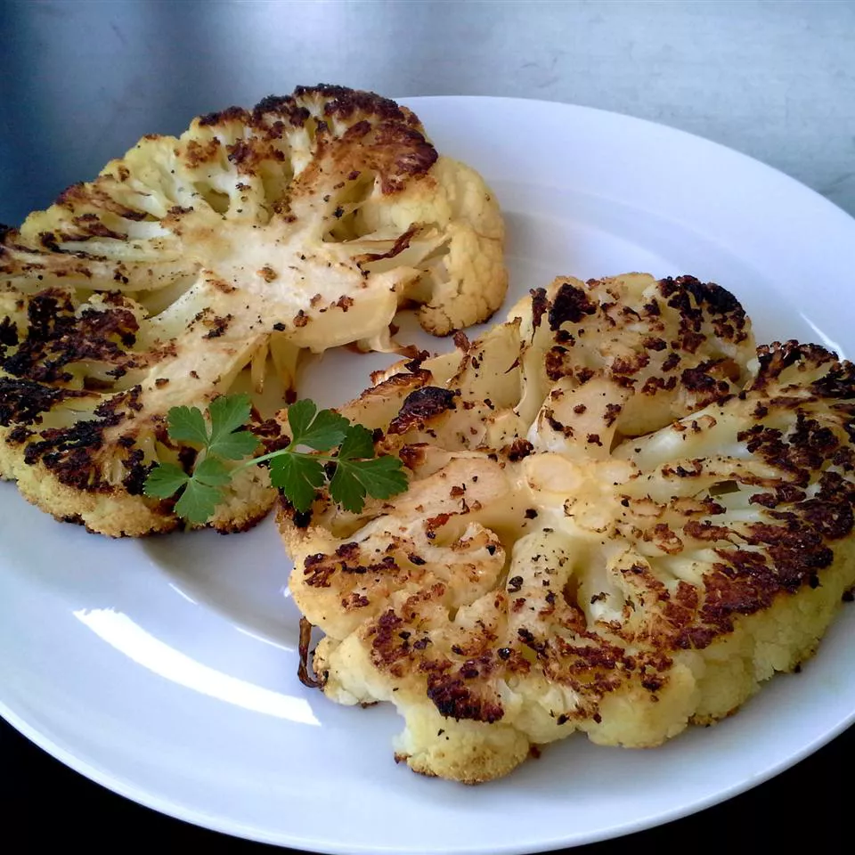

Roasted Cauliflower 'Steaks'

Description
These cauliflower steaks look beautiful on their own, and even better alongside a bit of mashed potato or yams. This is a great vegetarian alternative for meatless Mondays!
Ingredients
- 1 head cauliflower, trimmed
- 2 tablespoons extra-virgin olive oil, or more to taste
- ¼ teaspoon garlic powder, or to taste (Optional)
- Salt and ground black pepper to taste
Steps
- Preheat oven to 450 degrees F (230 degrees C). Line a baking sheet with aluminum foil.
- Place the cauliflower onto a cutting board with the stem side facing upwards; cut vertically into 4 steaks approximately even in thickness. Arrange 'steaks' onto the prepared baking sheet. Drizzle olive oil over the steaks; season with garlic powder, salt, and black pepper.
- Roast in preheated oven for 20 minutes, turn with a spatula, and continue to roast until soft in the middle and darkening around the edges, about 15 minutes more.